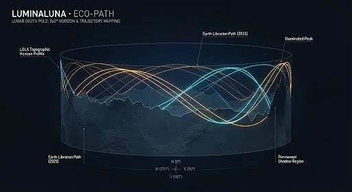

LIGHT AND LINK
AT THE LUNAR
SOUTH POLE.
Compare landing sites by sunlight for power and Earth in view for radio contact, computed from real NASA terrain.
Top landing sites
Key facts
A lander on a crater rim at the south pole
Our mission
Near the lunar south pole, the Sun skims the horizon and Earth rises and sets slowly. A few kilometres decide between power and darkness, contact and silence. We compute sunlight and direct Earth visibility for candidate sites and for any point you click, using real NASA lunar terrain.
By combining NASA LOLA laser topography with JPL planetary ephemerides, LUMINALUNA helps mission planners find sites with the most sunlight and the most time in direct radio contact with Earth.

About us
We are a team of four who built LuminaLuna for the NASA Space Apps Challenge 2026, so anyone can see in seconds which spots near the lunar south pole get sunlight and a view of Earth.